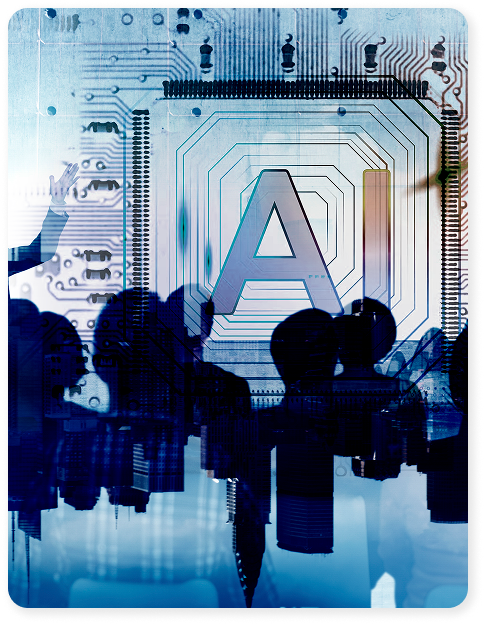

존경하는 국회의원 여러분,
인공지능(AI) 기술이 우리 사회를 근본적으로 변화시키고 있는 이 중요한 시기에,
우리는 ‘한국 인공지능
정책포럼’을 설립하여 지속 가능한 민간 주도의 정책 플랫폼을 마련하고자 합니다.
본 포럼은 독립적이고 장기적인 관점에서 AI 정책을 연구하고 제안하는 싱크탱크로서의 역할과 함께,국회의원님들과 각계 전문가들이 적극적으로 참여하여 실질적인 정책 변화를 이끌어내는
활동의 장이 될 것입니다. 우리는 의원님들과 함께 대한민국의 AI 정책을 선도하고, 국가 경쟁력을 높이며, 국민의 삶을 풍요롭게 만들어갈 것입니다. AI가 가져올 변화의 중심,
우리가 함께 연구하고 제안한 정책은 대한민국의 미래를 좌우할 것입니다.
2024년 10월 11일
한국 인공지능 정책포럼 준비위원회 드림